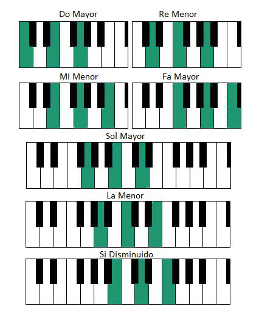

Zongora
Rovid tortenelem:
A zongora billentyűs, polifón húros hangszer. Billentyűsorral összeköttetésben álló, kis kalapácsokkal megütött, hangszekrényben kifeszített fémhúrok adják a zenei hangot. Hangképzése mechanikus, alapszintű kezelése a többi hangszerhez képest egyszerű, viszonylag könnyen és gyorsan elsajátítható. Népszerűségének oka az is, hogy egy játékos több szólamot képes egyidejűleg megszólaltatni rajta, így zenekari vagy kórusműveket, de akár operákat is könnyen előadhatunk segítségével. Ilyen szempontból a zeneszerzők és karmesterek fontos segédeszköze.
